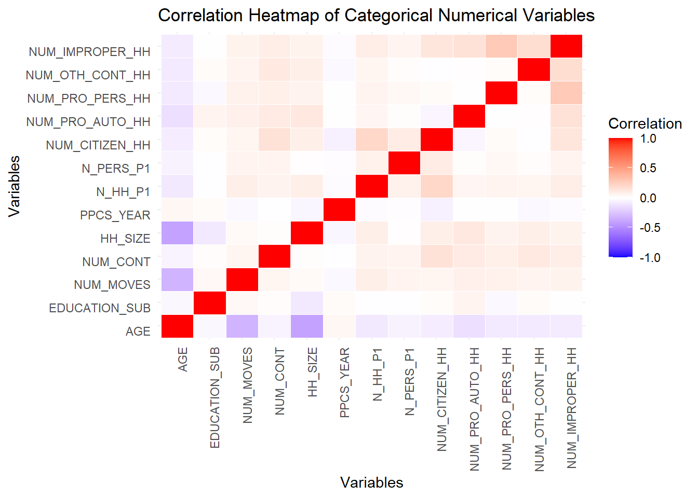
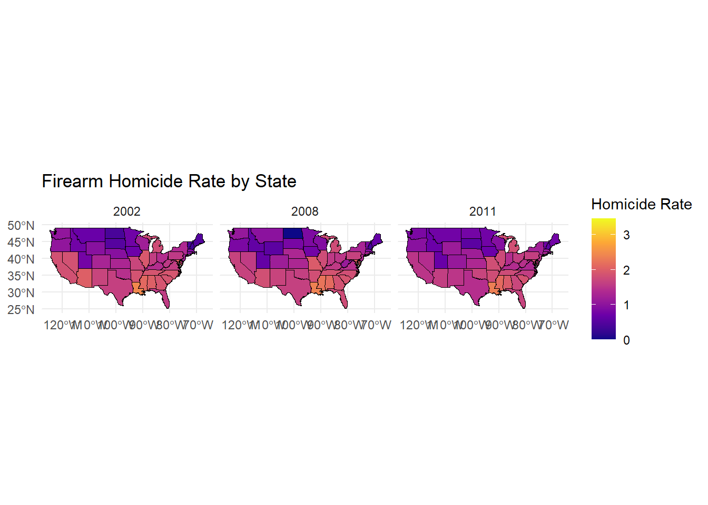
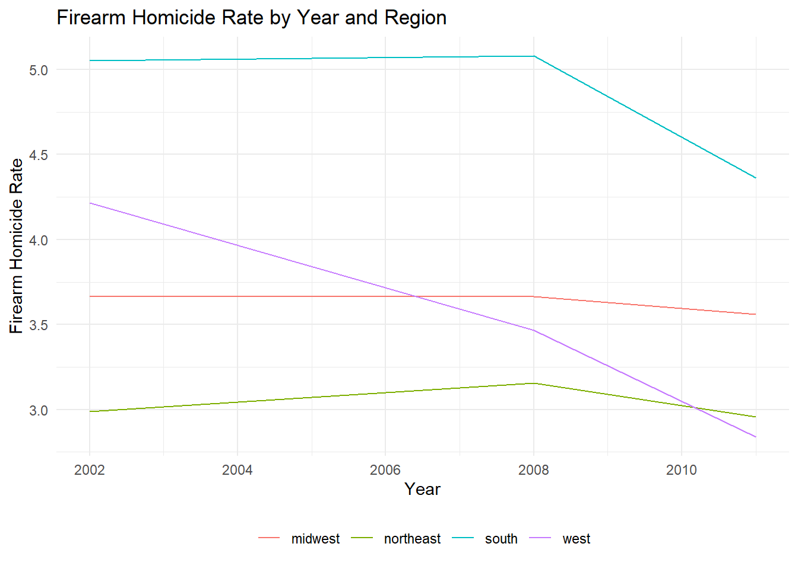
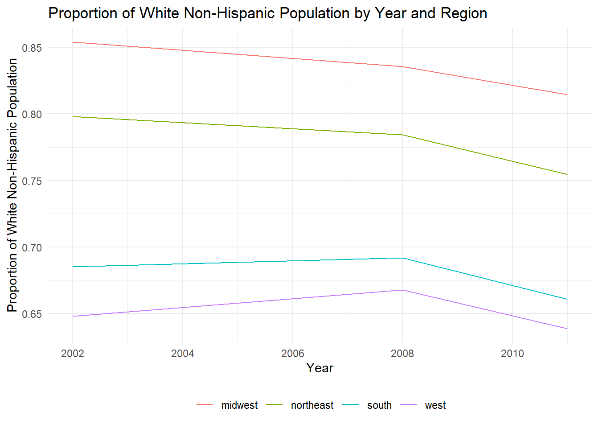
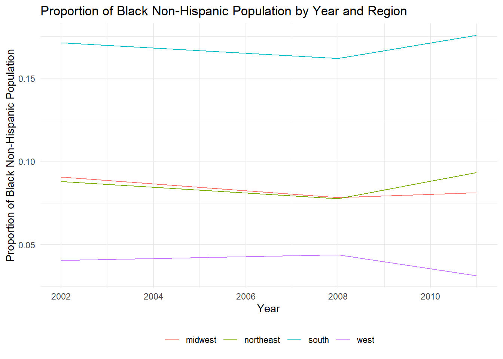
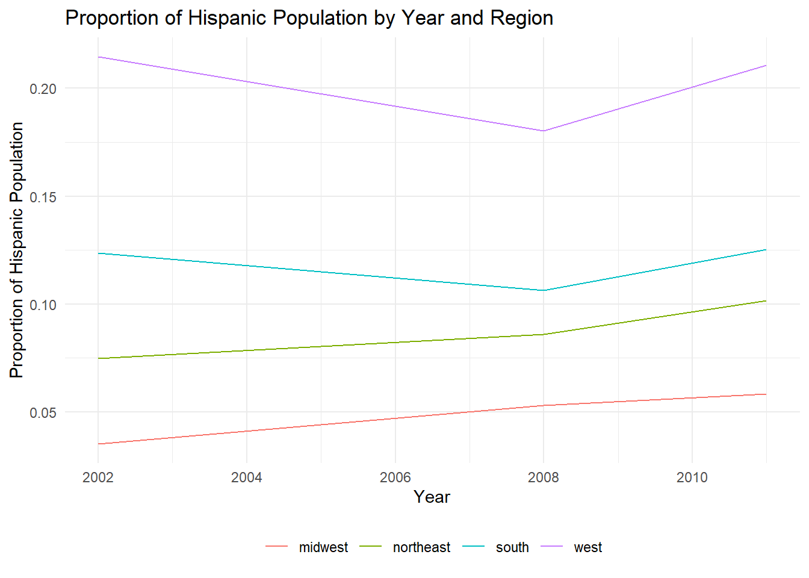
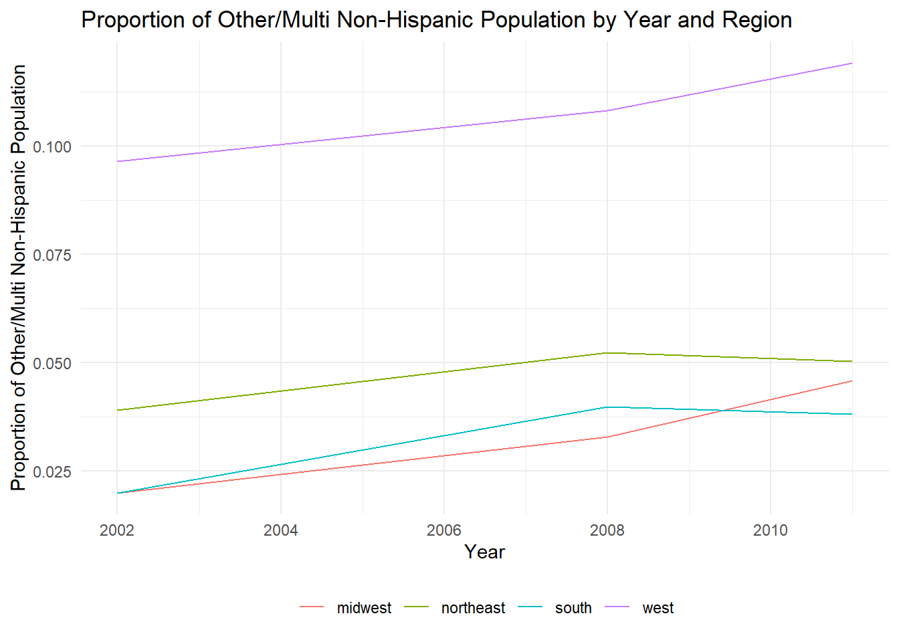

The first step of our EDA involves examining the “PROPER” variable, a binary variable which displays whether or not the police behaved properly during each interaction. This binary variable is reported for 19,321 of the 105,273 total cases, with 1,853 reported cases of the police behaving improperly and 17,468 cases of the police reporting properly. A plot is generated here to show how the proportion of improper police actions differs among different race populations.
Police Interation Data Analysis
Proper Conduct
The first step of our EDA involves examining the “PROPER” variable, a binary variable which displays whether or not the police behaved properly during each interaction. This binary variable is reported for 19,321 of the 105,273 total cases, with 1,853 reported cases of the police behaving improperly and 17,468 cases of the police reporting properly. Here, we see how the proportion of improper police actions differs among different race populations.
The plot shows that the “Black, Non-Hispanic” population experienced a much higher proportion of improper police interactions than all other populations, with about 15% of reported interactions classified as improper. Among “Hispanic” and “Other or multiracial, Non-Hispanic” populations, the proportion of improper police interacts was about 10%, while the rate of improper police interactions among members of the “White, Non-Hispanic” population was about 7%.
In making this observation it is important to note that the numbers could be skewed due to the number of responses recieved for each group, and also the nature with which the data was collected as a survey. Which may prompt those who felt racially discriminated against to be more likely to reply to the survey in the first place.
# Categorizing variables based on their types# There are 3 types of categorical variables considered: binary, categorical, and numerical categorical#removed "CONTACT" and "ERROR" due to "Warning in cor(numeric_data, use = "complete.obs") : the standard deviation is zero" errorbinary_columns <-c("MALE", "WORK_LW", "HHPOV", "PUB_HOUSE", "PUB_HOUSE_SUB", "REGION", "INPERSON", "VICAR_CITIZEN", "VICAR_PRO_AUTO", "VICAR_PRO_PERS", "VICAR_OTH_CONT", "VICAR_IMPROPER", "D_HH_P23", "PROPER")categorical_columns <-c("C4_RACE", "MAR_STAT", "FREQ_DRV", "TENURE", "MSA_STATUS", "EDUCATION")num_categorical_columns <-c("AGE", "EDUCATION_SUB", "NUM_MOVES", "NUM_CONT", "HH_SIZE", "PPCS_YEAR", "N_HH_P1", "N_PERS_P1", "NUM_CITIZEN_HH", "NUM_PRO_AUTO_HH", "NUM_PRO_PERS_HH", "NUM_OTH_CONT_HH", "NUM_IMPROPER_HH")filtered <- police_interaction# Selecting data by typebinary_data <- filtered %>%select(all_of(binary_columns)) %>%select(where(is.numeric))categorical_data <- filtered %>%select(all_of(categorical_columns)) %>%select(where(is.numeric))num_categorical_data <- filtered %>%select(all_of(num_categorical_columns)) %>%select(where(is.numeric))# Calculating correlation matrices with appropriate methodscor_binary <-cor(binary_data, use ="pairwise.complete.obs", method ="pearson")cor_categorical <-cor(categorical_data, use ="pairwise.complete.obs", method ="spearman")cor_num_categorical <-cor(num_categorical_data, use ="pairwise.complete.obs", method ="pearson")# Creating a heatmap functionplot_heatmap <-function(cor_matrix, title) { cor_melted <-melt(cor_matrix)ggplot(cor_melted, aes(Var1, Var2, fill = value)) +geom_tile(color ="white") +scale_fill_gradient2(low ="blue", high ="red", mid ="white",midpoint =0, limit =c(-1, 1), name ="Correlation") +labs(title = title, x ="Variables", y ="Variables") +theme_minimal() +theme(axis.text.x =element_text(angle =90, hjust =1),axis.text.y =element_text(angle =0, vjust =1))}# Plotting heatmaps for each correlation matrixif (ncol(num_categorical_data) >1) {print(plot_heatmap(cor_num_categorical, "Correlation Heatmap of Categorical Numerical Variables"))}

One notable positive correlation from the graph above is the relation between NUM_IMPROPER, the nmber of people in households who experienced improper contact, and NUM_PRO_PERS_HH, the number of people in households with suspect-related police-intiated contact.
Some notable negative correlations from the graph include the relation between age & household size and age & NUM_MOVES, which is a variable describing how many times an individual has moved in the past 5 years.
For data modeling, the data was split into two. 80% of the data was randomly selected for the training dataset, and 20% was randomly selected for the testing dataset. The model attempts to predict whether someone would be arrested based on their race, years of education, if their household is living in poverty, and their gender. In the training set, the F-statistic is far over 1 and the p-values show over 95% confidence in all the response variables being significant.
Modeling
For data modeling, we decided to split the data into two. 80% of the data was randomly selected for the training dataset, and 20% was randomly selected for the testing dataset. The model attempts to predict whether someone would be arrested based on their race, years of education, if their household is living in poverty, and their gender.
# Split datasplit <-initial_split(police_interaction, prop = .8)# Splitstraining<-training(split)testing <-testing(split)# Filter out some bad rowsfiltered_training_data <- training |>filter(!is.na(ARRESTED) &!is.na(RACE) &!is.na(EDUCATION) &!is.na(HHPOV) &!is.na(MALE))filtered_testing_data <- testing |>filter(!is.na(ARRESTED) &!is.na(RACE) &!is.na(EDUCATION) &!is.na(HHPOV) &!is.na(MALE))# Train modelmodel <-lm(ARRESTED ~ RACE + EDUCATION + HHPOV + MALE, filtered_training_data)summary(model)
Call:
lm(formula = ARRESTED ~ RACE + EDUCATION + HHPOV + MALE, data = filtered_training_data)
Residuals:
Min 1Q Median 3Q Max
-0.14747 -0.04052 -0.02441 -0.00747 1.01149
Coefficients:
Estimate Std. Error t value Pr(>|t|)
(Intercept) 0.0987953 0.0091693 10.775 < 2e-16
RACEHispanic -0.0278073 0.0065079 -4.273 1.94e-05
RACEOther or multiracial, Non-Hispanic -0.0302281 0.0084320 -3.585 0.000338
RACEWhite, Non-Hispanic -0.0249482 0.0050233 -4.966 6.91e-07
EDUCATION -0.0047412 0.0005661 -8.375 < 2e-16
HHPOV 0.0222555 0.0046037 4.834 1.35e-06
MALE 0.0264236 0.0028045 9.422 < 2e-16
(Intercept) ***
RACEHispanic ***
RACEOther or multiracial, Non-Hispanic ***
RACEWhite, Non-Hispanic ***
EDUCATION ***
HHPOV ***
MALE ***
---
Signif. codes: 0 '***' 0.001 '**' 0.01 '*' 0.05 '.' 0.1 ' ' 1
Residual standard error: 0.1566 on 12585 degrees of freedom
Multiple R-squared: 0.01888, Adjusted R-squared: 0.01842
F-statistic: 40.37 on 6 and 12585 DF, p-value: < 2.2e-16
We note that it is not necessary to actually test our model as it will not be used to make predictions, but instead to simply example the relationship between the predictors and the ARRESTED metric.
The summary of this model denotes that there are very small p-values associated with the predicters. This means there is significant evidence that the predictors of our model have an effect on the likelihood of being arrested.
From the model summary we actually notice that between the difference races there is not much difference in their relationship with being arrested. However we see that there is a strong correlation for the Education, Household Poverty, and Gender of the individual involved in the police interaction. The model shows that those who are less educated are more likely to be arrested, alongside those from lower household incomes, and individuals who are males.
Firearm Proxy Dataset
The second dataset to be incorporated describes the number of homicides, the number of suicides, and the number of suicides done with firearms for whites & nonwhites within different states from 1949 to 2020.
This map represents the rate of homicides by firearm by state. There are different levels of colors to represent the homicide rate by state, and the diagrams are split into 2002, 2008, and 2011.
firearm_ds <- firearm_ds |>mutate(firearm_homicide_rate =as.numeric(firearm_homicide_rate),state =tolower(state)) |>filter(!is.na(firearm_homicide_rate))us_states <-st_as_sf(maps::map("state", plot =FALSE, fill =TRUE)) %>%mutate(region =tolower(ID)) %>%# Convert state names to lowercaseselect(region, geom) # Retain only state name and geometry columnsmap_data <- us_states |>rename(state = region) |>left_join(firearm_ds, by ="state")map_data$log_firearm_homicide_rate <-log(map_data$firearm_homicide_rate +1)ggplot(map_data) +geom_sf(aes(fill = log_firearm_homicide_rate), color ="black", size =0.2) +scale_fill_viridis_c(option ="plasma", name ="Homicide Rate") +theme_minimal() +labs(title ="Firearm Homicide Rate by State",fill ="Rate" ) +facet_wrap(~year)

This chart plots the firearm homicide rate * 10 and population proportion of both white and black people in various regions of the US. The firearm homicide rate was multiplied by 10 so that the trends in firearm homocides could be viewed more easily.
From this map, we notice that across the 3 years we seek to observe, its generally true that states along the southern and midwestern parts of the United States have the highest rate of firearm homicide.
This is useful to understand as we can use this inforation to dig deeper into the causes behind negative police behavior. This may help us determine if race is potentially superceded by gun violence in terms of causes for the focus of our study.
Combined Regional Dataset
The plot below shows a breakdown of the firearm homicide rates for each region across the years relevant to our analysis.
ggplot(combined_regional_ds, aes(x = year,y = fa_homicide_rate,color = region )) +geom_line() +# Create a line for each regionlabs(title ="Firearm Homicide Rate by Year and Region",x ="Year",y ="Firearm Homicide Rate" ) +theme_minimal() +# Clean theme for the plottheme(legend.title =element_blank(), legend.position ="bottom" )

This interactive scatter plot shows the Firearm Homicide Rate relative to racial proportions of the 4 regions. Most of the firearm homicides took place in the South, with similar firearm homicide rate in the Midwest and Northeast, and the lowest rate of firearm homicides in the West. From the different scatter plots, regions with more minorities had higher firearm homicide rate, which could be related to the higher proportion of improper police behavior reported by minorities than by non-minorities.
# Define server logic ----# server <- function(input, output) {# # Load the data# data <- read_rds(here::here("dataset", "combined_regional_data.rds"))# # # Render the interactive plot# output$scatterPlot <- renderPlot({# ggplot(data, aes(x = fa_homicide_rate, y = .data[[input$selected_race]])) +# geom_point(aes(color = as.factor(year)), size = 2, alpha = 0.7) + # Use color to differentiate years# geom_text(aes(label = year), vjust = -1, size = 3, alpha = 0.8) + # Add year annotations above points# facet_wrap(~ region) + # Optional: Facet by region# labs(# title = paste("Firearm Homicide Rate vs", input$selected_race),# x = "Firearm Homicide Rate",# y = "Proportion",# color = "Year"# ) +# theme_minimal() +# theme(# legend.position = "bottom", # Place legend at the bottom# legend.box = "horizontal", # Align legend items horizontally# legend.text = element_text(size = 10), # Adjust legend text size# legend.title = element_text(size = 12), # Adjust legend title size# legend.key.width = unit(1, "cm"), # Add space between legend items# legend.spacing.x = unit(0.5, "cm") # Increase horizontal spacing# ) +# guides(# color = guide_legend(nrow = 1, byrow = TRUE) # Force a single-row legend# )# })# }
This shows that like we expected the South region by far had the highest rate of firearm homicides. We may expect to see if there is correlation between this statistic and our variables related to police behavior.
# Plot for WHITE_NH_PROPggplot(combined_regional_ds, aes(x = year,y = WHITE_NH_PROP,color = region )) +geom_line() +# Create a line for each regionlabs(title ="Proportion of White Non-Hispanic Population by Year and Region",x ="Year",y ="Proportion of White Non-Hispanic Population" ) +theme_minimal() +# Clean theme for the plottheme(legend.title =element_blank(), legend.position ="bottom" )

# Plot for B_NH_PROP (Black Non-Hispanic Proportion)ggplot(combined_regional_ds, aes(x = year,y = B_NH_PROP,color = region )) +geom_line() +# Create a line for each regionlabs(title ="Proportion of Black Non-Hispanic Population by Year and Region",x ="Year",y ="Proportion of Black Non-Hispanic Population" ) +theme_minimal() +# Clean theme for the plottheme(legend.title =element_blank(), legend.position ="bottom" )

# Plot for HISPANIC_PROP (Hispanic Population Proportion)ggplot(combined_regional_ds, aes(x = year,y = HISPANIC_PROP,color = region )) +geom_line() +# Create a line for each regionlabs(title ="Proportion of Hispanic Population by Year and Region",x ="Year",y ="Proportion of Hispanic Population" ) +theme_minimal() +# Clean theme for the plottheme(legend.title =element_blank(), legend.position ="bottom" )

# Plot for OTHER_MULTI_NH_PROP (Other/Multi Non-Hispanic Proportion)ggplot(combined_regional_ds, aes(x = year,y = OTHER_MULTI_NH_PROP,color = region )) +geom_line() +# Create a line for each regionlabs(title ="Proportion of Other/Multi Non-Hispanic Population by Year and Region",x ="Year",y ="Proportion of Other/Multi Non-Hispanic Population" ) +theme_minimal() +# Clean theme for the plottheme(legend.title =element_blank(), legend.position ="bottom" )

These plots above show the changes in the percentage of each racial group across the three years, which our study spans. We can combine all of the information in these plots by creating a model that will train for a linear relationship between the rates of firearm homicides and the distribution of racial groups for this data.
Call:
lm(formula = fa_homicide_rate ~ OTHER_MULTI_NH_PROP + HISPANIC_PROP +
B_NH_PROP + WHITE_NH_PROP, data = combined_regional_ds)
Residuals:
Min 1Q Median 3Q Max
-0.7323 -0.3882 0.1048 0.3215 0.6758
Coefficients: (1 not defined because of singularities)
Estimate Std. Error t value Pr(>|t|)
(Intercept) 2.8224 0.9544 2.957 0.0182 *
OTHER_MULTI_NH_PROP -18.3424 18.3005 -1.002 0.3456
HISPANIC_PROP 11.3317 7.5610 1.499 0.1723
B_NH_PROP 6.8421 6.9735 0.981 0.3553
WHITE_NH_PROP NA NA NA NA
---
Signif. codes: 0 '***' 0.001 '**' 0.01 '*' 0.05 '.' 0.1 ' ' 1
Residual standard error: 0.5255 on 8 degrees of freedom
Multiple R-squared: 0.6639, Adjusted R-squared: 0.5379
F-statistic: 5.268 on 3 and 8 DF, p-value: 0.02683
This interactive scatter plot shows the Firearm Homicide Rate relative to racial proportions of the 4 regions. Most of the firearm homicides took place in the South, with similar firearm homicide rate in the Midwest and Northeast, and the lowest rate of firearm homicides in the West. Looking at the different scatter plots, we observed that regions with more minorities had higher firearm homicide rate, which could be related to the higher proportion of improper police behavior reported by minorities than by non-minorities.
#| standalone: true
#| viewerHeight: 640 # You will have to adjust this to fit everything
library(shiny)
library(tidyverse)
options("readr.edition" = 1) # keep this to ensure you can download the data
# Define server logic ----
server <- function(input, output) {
# Load the data
data <- read_rds(here::here("dataset", "combined_regional_data.rds"))
# read_rds("https://github.com/sussmanbu/ma-4615-fa24-final-project-group-7/blob/main/dataset/combined_regional_data.rds")asd
# Define UI for the application ----
ui <- fluidPage(
# Application title
titlePanel("Interactive Scatter Plot: Firearm Homicide Rate and Racial Proportions"),
# Sidebar layout with input and output
sidebarLayout(
# Sidebar panel for inputs
sidebarPanel(
# Dropdown menu for selecting racial group
selectInput(
inputId = "selected_race",
label = "Select a Racial Group:",
choices = c(
"White NH" = "WHITE_NH_PROP",
"Black NH" = "B_NH_PROP",
"Hispanic" = "HISPANIC_PROP",
"Other/Multi NH" = "OTHER_MULTI_NH_PROP"
),
selected = "WHITE_NH_PROP"
)
),
# Main panel for displaying outputs
mainPanel(
plotOutput(outputId = "scatterPlot")
)
)
)
# Run the application ----
shinyApp(ui = ui, server = server)
 # Motivation for Data Analysis
# Motivation for Data Analysis